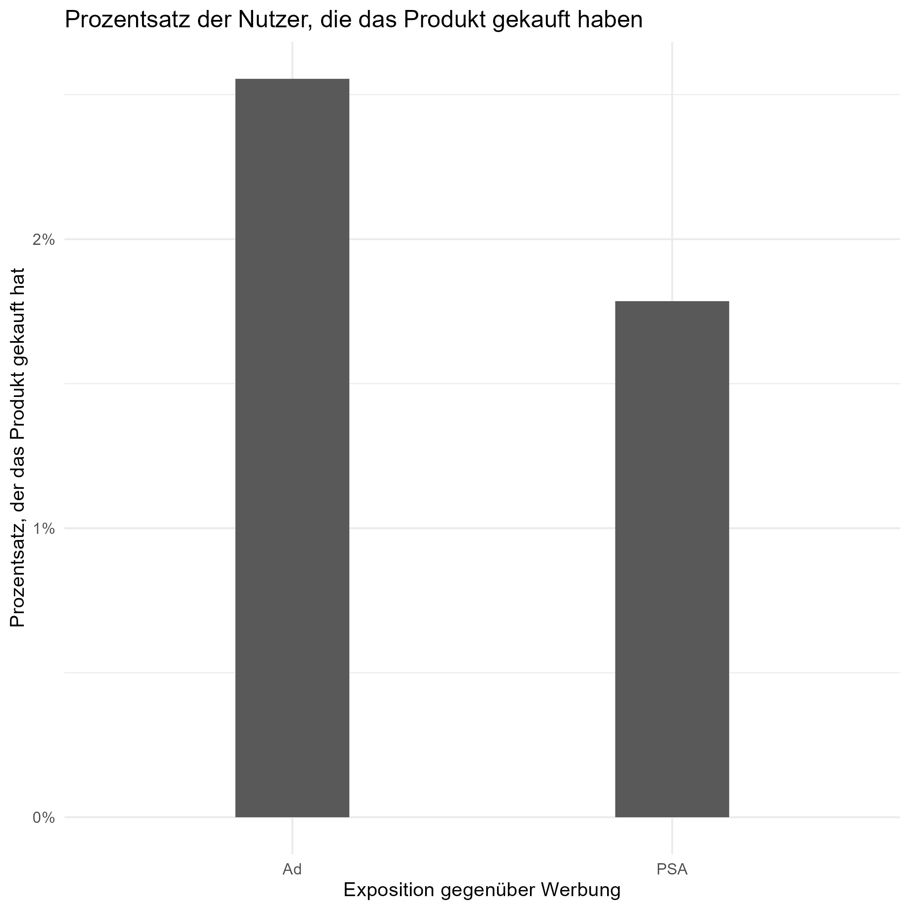

A/B Tests
Weil A/B-Tests ein wichtiger Bestandteil vieler moderner Websites und Applikationen sind, habe ich einige Beispiele vorbereitet, die Sie unten sehen können.
Hallo und herzlich willkommen zu meinem Beispiel für einen A/B-Test. Dieser A/B-Test wird mit R durchgeführt und basiert auf einem öffentlich verfügbaren Datensatz, den Sie hier finden. In diesem Szenario versucht ein Unternehmen herauszufinden, ob seine neueste Werbekampagne wirksam war. Es hat ein Experiment durchgeführt, indem es für einige Nutzer Anzeigen auf Websites platziert hat, während andere Nutzer PSAs sehen, die nichts mit dem Unternehmen zu tun haben. Diese beiden Gruppen werden dann verglichen, um festzustellen, ob sie das Produkt, das das Unternehmen zu verkaufen versucht, gekauft haben oder nicht.
Bevor wir beginnen, ein paar grundlegende Fakten zu den Daten:
- Es gibt 588101 einzigartige potenzielle Kunden im Datensatz.
- 96 % der potenziellen Kunden sahen die Anzeigen, 4 % sahen sie nicht.
- Ungefähr 97,5 % der potenziellen Kunden haben das Produkt nicht gekauft, nur 2,5 % haben es gekauft.
- Die Kunden wurden mehrfach mit den Anzeigen konfrontiert (1-2065 Mal), wobei der Median bei 13 lag.
Also, beginnen wir mit der Analyse!
Beginnen wir mit den Grundlagen, nämlich der Bewertung, ob das bloße Betrachten der Werbung mit dem Kauf des Produkts verbunden ist oder nicht. Auf den ersten Blick sieht es so aus, als ob dies der Fall wäre. 2,55 % der Nutzer, die eine Anzeige gesehen haben, haben das Produkt gekauft, aber nur 1,78 % der Nutzer, die den PSA gesehen haben.
Es sind jedoch noch einige Tests erforderlich. Erstens: Ist dieser Unterschied tatsächlich statistisch signifikant? Um das herauszufinden, werde ich einen Chi-Squared-Test durchführen. Idealerweise suchen wir hier einen Wert unter 0,01, was bedeutet, dass der Unterschied zwischen den beiden Werten extrem unwahrscheinlich ist, wenn das Ereignis (der Kauf des Produkts) für PSA- und Werbebetrachter gleich wahrscheinlich ist. Glücklicherweise erhalten wir einen Wert von 2X10^-13, was bedeutet, dass die Werbekampagne mit an Sicherheit grenzender Wahrscheinlichkeit keinen Einfluss auf die Kaufwahrscheinlichkeit des Produkts hatte.
In einem nächsten Schritt werden wir die Effektgröße untersuchen: wie viel Einfluss die Werbekampagne auf das Kundenverhalten hatte. Hierfür verwenden wir Cramer's V, einen statistischen Test zur Bestimmung der Effektgröße. Cramer's V kann einen Wert zwischen 0 und 1 liefern, wobei 0 für keinen Effekt und 1 für einen extrem starken Effekt steht. In diesem Fall erhalten wir einen Wert von nur 0,01 - statistisch gesehen ein ziemlich kleiner Wert. Das allein reicht jedoch nicht aus, um festzustellen, ob die Werbekampagne ein Erfolg war. Der Datensatz enthielt keine Informationen darüber, wie viele Einnahmen das Unternehmen pro Einheit erzielt, wie hoch die Kosten der Kampagne waren usw. - alles wichtige Informationen, die man wissen muss.
Außerdem wissen wir, dass einige Nutzer die Anzeigen häufiger gesehen haben als andere. Es kann sein, dass das einmalige Betrachten der Anzeige relativ wenig Wirkung hat, aber das mehrmalige Betrachten der Anzeige kann stark vorhersagen, ob jemand den Artikel kauft. Die meisten Nutzer des Datensatzes sahen relativ wenige Anzeigen, aber einige Nutzer sahen bis zu 2000 Anzeigen.
| Anzahl der gesehenen Anzeigen | % der Nutzer |
|---|---|
| 1 | 9.6% |
| < 10 | 42.3% |
| < 50 | 87.9% |
| < 100 | 96.0% |
Ein erster Blick auf die Daten zeigt, dass es höchstwahrscheinlich einen Zusammenhang zwischen der Anzahl der gesehenen Anzeigen und der Kaufwahrscheinlichkeit der Produkte gibt. Diese Zahlen beziehen sich nur auf die Nutzer, die die Anzeige gesehen haben, nicht auf diejenigen, die die PSA gesehen haben.
| Anzahl der gesehenen Anzeigen | Wahrscheinlichkeit des Kaufs |
|---|---|
| 1 | 0.19% |
| 2-10 | 0.40% |
| 11-50 | 1.89% |
| 51-100 | 11.6% |
| 101-500 | 17.1% |
| More than 500 | 17.5% |
Wie man sieht, haben nur sehr wenige Nutzer, die die Anzeige weniger als 50 Mal gesehen haben, das Produkt gekauft. Diejenigen, die die Anzeige mehr als 50 Mal sahen, hatten jedoch eine gute Chance, das Produkt zu kaufen, obwohl nach einigen hundert Aufrufen die zusätzliche Werbung die Chancen auf einen Kauf stark erhöht.